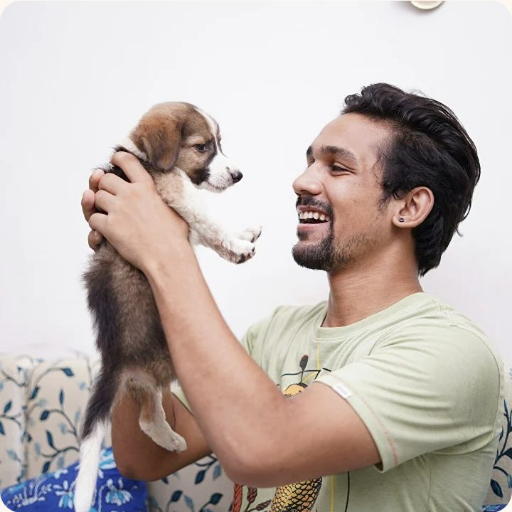
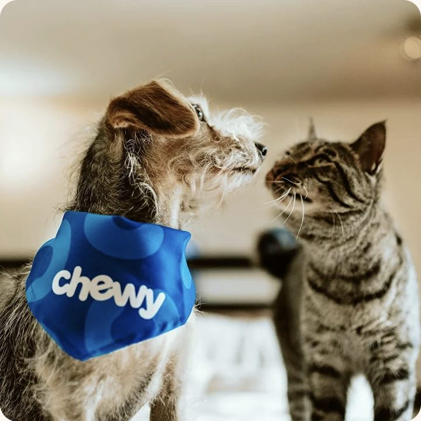
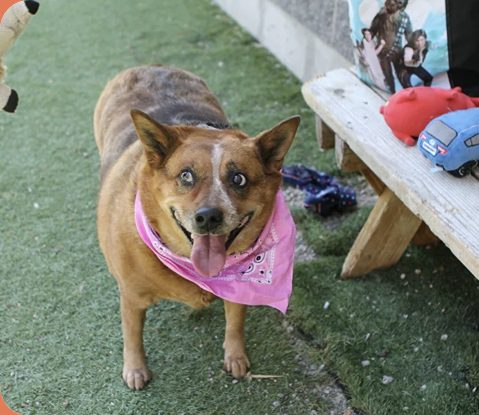
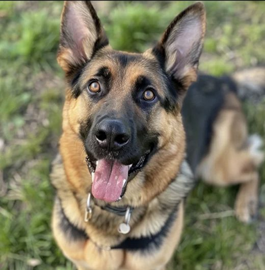
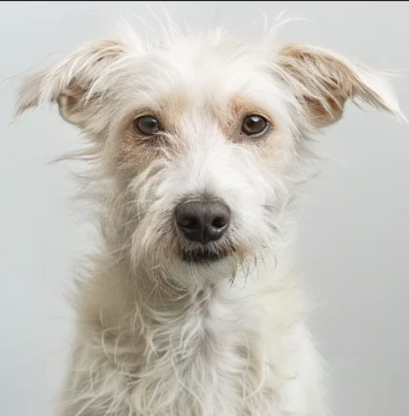

Приютить питомца
Каждое животное наполнено любовью и готово стать верным другом.
Усыновить животное сейчасПроцесс усыновления
Усыновление животного начинается с выбора питомца. Посмотрите фото и описания, затем заполните анкету и пройдите собеседование. После этого подпишите договор и получите друга.
Найди своего друга
Ознакомься с фотографиями и данными животных. Выбери того, кто тебе понравится.
Поговори с нами
Свяжись с нами, чтобы узнать больше о питомце и договориться о встрече.
Заполни необходимые документы
Мы поможем тебе заполнить все необходимые документы для усыновления.
Завершение процесса
Поздравляем с новым другом! После завершения всех формальностей ты сможешь забрать своего нового друга домой.
Что будет после усыновления
Шаги I–IV вы уже знаете, а дальше мы остаёмся рядом с вами и питомцем:
- Первые дни дома: даём советы по уходу и адаптации.
- Контрольный звонок: узнаём, как питомец освоился.
- Фотоотчёт: радуемся вместе с вами и нашими волонтёрами.
Галерея








Часто задаваемые вопросы
Как можно забрать животное из приюта?
Выберите питомца, свяжитесь с нами и приезжайте на знакомство. После оформления документов вы сможете забрать его домой.
Какие документы нужны для усыновления?
Паспорт и заполненная анкета. Остальное мы поможем оформить на месте.
Можно ли выбрать конкретное животное?
Да, вы можете выбрать любого питомца, который вам понравился, и познакомиться с ним лично.
Как проходит адаптация животного в новом доме?
Первое время дайте питомцу спокойное место, терпение и внимание. Мы всегда на связи и подскажем, как помочь ему освоиться.
Каждый хвостик ждёт своего человека
Заберите питомца домой, станьте волонтёром или помогите приюту пожертвованием.